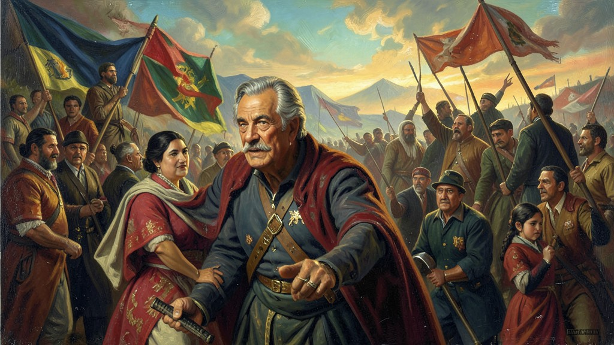
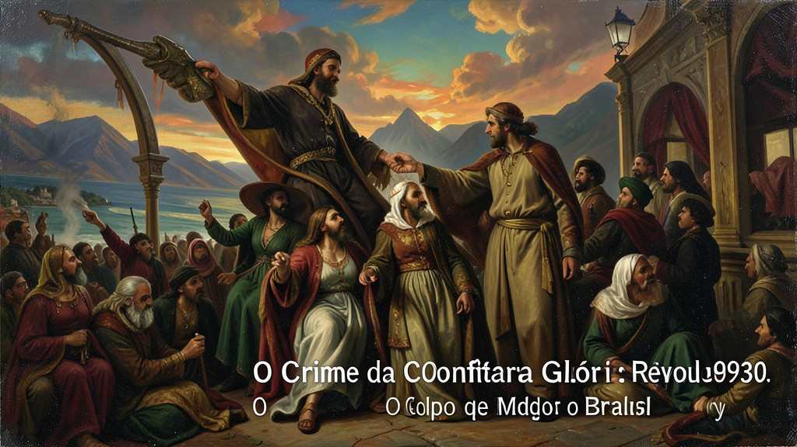

"Em 1930, os tanques de Getúlio Vargas amarram seus cavalos no obelisco do Rio de Janeiro. Era o fim da República do Café com Leite e o nascimento do Brasil moderno."
A **Revolução de 1930** foi um golpe de Estado que pôs fim à República Velha. O equilíbrio entre São Paulo e Minas Gerais (Café com Leite) quebrou quando os paulistas indicaram Júlio Prestes para a sucessão presidencial, ignorando o acordo com os mineiros. Estes aliaram-se ao Rio Grande do Sul e à Paraíba, formando a **Aliança Liberal**, com Getúlio Vargas como candidato. A derrota de Vargas nas urnas (marcadas por fraude de ambos os lados) foi o pretexto técnico, mas o **assassinato de João Pessoa** (vice de Vargas) em Recife foi o estopim emocional que mobilizou as massas. Com o apoio dos **Tenentes** (militares reformistas) e de parte da elite descontente com o monopólio paulista, as tropas de Vargas partiram do Sul e do Nordeste em direção à capital. Em outubro, o presidente Washington Luís foi deposto e Vargas assumiu como 'Presidente Provisório'. A Revolução de 1930 não foi apenas uma troca de nomes, mas a entrada do Brasil em uma fase de industrialização, centralização política e criação de leis trabalhistas. O ENEM costuma cobrar as causas da crise da República Velha (atrelada à crise de 1929) e o caráter heterogêneo da Aliança Liberal (elite descontente + militares reformistas).
1. A Traição de São Paulo
A política brasileira era um jogo de cartas marcadas. São Paulo (café) e Minas (leite) alternavam no poder por décadas. Mas em 1929, o presidente paulista Washington Luís decidiu indicar outro paulista, quebrando o pacto. Isso enfureceu os mineiros, que perceberam que os paulistas queriam o bolo econômico todo para si num momento de crise mundial. A divisão das oligarquias foi a fresta por onde Getúlio Vargas entrou.

2. Aliança Liberal: A Frente de Vargas
Vargas prometia o que o povo queria ouvir: voto secreto, anistia para os tenentes e leis que protegessem os trabalhadores. A Aliança Liberal uniu o agronegócio gaúcho, a elite mineira traída e os jovens militares cansados da corrupção dos coronéis. Era um grupo que não tinha nada em comum, exceto o ódio pelo governo central de Washington Luís. A campanha de 1930 foi a primeira a mobilizar grandes comícios nas cidades brasileiras.

3. O Crime da Confeitaria Glória
O assassinato de João Pessoa não teve relação direta com a revolução de Getúlio, mas foi transformado em martírio. As roupas ensanguentadas de João Pessoa foram expostas como troféus de propaganda contra o governo de Washington Luís. O grito de 'Nego' (eu nego, bordão de Pessoa) virou a senha para os quartéis se sublevarem. O Brasil, que estava calmo, pegou em armas por um crime que foi a faísca num barril de pólvora.

4. A Marcha sobre o Rio: Cavalos no Obelisco
As tropas de Getúlio não precisaram de muita luta. O exército oficial estava dividido e muitos oficiais abraçaram o movimento. Enquanto os trens de soldados vinham do Sul, o Nordeste também se levantava. A imagem dos gaúchos amarrando seus cavalos no obelisco da Avenida Rio Branco, no coração da capital, selou simbolicamente o fim da aristocracia cafeeira e o início da era das massas urbanas.
5. O Fim da República Velha: Saldo e Legado
Getúlio assumiu prometendo eleições rápidas e democracia, mas governaria por 15 anos ininterruptos. A Revolução de 1930 eliminou os coronéis do poder central, mas manteve a estrutura de poder mudando apenas de mãos. O Brasil de Vargas começou centralizador, criando ministérios (como o do Trabalho e Educação) e preparando o terreno para o que seria o Estado Novo em 1937. O café perdia a coroa, e o Estado assumia o papel de patrão da nação.
TEXTO DE APOIO
A autodenominada e triunfante Revolução de 1930 significou intrincadamente o estridente colapso terminal encerramento das arcaicas estruturas fundamentadas atávicas na agro-política das caducas repesadas fraudes na alternância e alicerçada na famigerada ordem 'Café-com-Leite'. Não fora popular no estrito embasamento do vulgo marginalizado, e sim contundentemente a revolta da coalização burguesa fragmentada de variadas oligarquias periféricas regionais silenciadas preteridas, aglutinada solidamente somada à milícia insurreta imposta progressista das baionetas liberais revoltosas armadas do tenentismo renegadas e empolgadas descontes sob Washington Luiz.
Com a magistral e maquiavélica alavanca do sacrifício preterista imolado oponentre executado covardemente pela balação João Pessoa aglutivava-se o lastro retórico derradeiro, os comandantes fardados revoltos e o maquinador gaúcho assumiam o Paço central rompendo vertiginosamente decenais exclusivismos monopolistas cafeeiros excludentes paulistocêntricos. Desencadeava-se um irreversível aprimoramento intervencionista progressivo industrial urbano transmutando forçosamente o agrário passadista bucólico exportador rústico do mandonismo latifundiário colonialista ao novo patamar burocrático modernizador estatista unificador.
Em exames macroestruturais sociológicos requer perceber-se categoricamente a subjacença conservadora transmutativa na engenhosa elite aliada oligárquica: rompemos amarras oligarcas unicamente para perpetuar e renovar as estruturas dominantes elitistas com repaginação modernizadoras estatizantes industriais sem inclusão ou sem as clarezas massificadoras reais proletária; A Revolução varguista atendeu prementes anseios das defasadas camadas emergencial urbanizadas médias na perpetuidade autoritarista excludente do sufrágio ou partilhas das riquezas dos dominados operariados marginais.
Pratique seu Conhecimento
A formação da Aliança Liberal (1929) e a consequente Revolução de 1930 foram motivadas principalmente por qual rompimento político?
Qual evento fortuito serviu como estopim emocional e justificativa propagandística para o início armado da Revolução de 1930?
Mini Games
Flashcards de Revisão
A formação da Aliança Liberal (1929) e a consequente Revolução de 1930 foram motivadas principalmente por qual rompimento político?
Qual evento fortuito serviu como estopim emocional e justificativa propagandística para o início armado da Revolução de 1930?
Mitos e Verdades Históricas
Verdade ou Mito: Sobre o tema, é correto afirmar que: A) O fim da exportação de leite condensado para a Rússia..
A AFIRMAÇÃO É: VERDADE
A indicação de Júlio Prestes por Washington Luís uniu Minas, Rio Grande do Sul e Paraíba contra São Paulo.
Verdade ou Mito: Sobre o tema, é historiograficamente aceito que: B) O rompimento do acordo de alternância de poder entre as oligarquias de São Paulo e Minas Gerais (Política do Café com Leite)..
A AFIRMAÇÃO É: UM MITO
Falso! A indicação de Júlio Prestes por Washington Luís uniu Minas, Rio Grande do Sul e Paraíba contra São Paulo.
Verdade ou Mito: Sobre o tema, é correto afirmar que: A) A queda da Bolsa de Valores de Nova York em 1929..
A AFIRMAÇÃO É: VERDADE
Embora motivado por questões locais, o crime foi capitalizado pela Aliança Liberal para mobilizar a revolta armada.
Verdade ou Mito: Sobre o tema, é historiograficamente aceito que: B) O assassinato de João Pessoa, então governador da Paraíba e vice na chapa de Getúlio Vargas..
A AFIRMAÇÃO É: UM MITO
Falso! Embora motivado por questões locais, o crime foi capitalizado pela Aliança Liberal para mobilizar a revolta armada.
Linha do Tempo
1. A Traição de São Paulo
2. Aliança Liberal: A Frente de Vargas
3. O Crime da Confeitaria Glória
Jogo da Memória (Associações)
A formação da Aliança Liberal (1929) e a cons...
A) A queda da Bolsa de Valores de Nova York e...
Qual evento fortuito serviu como estopim emoc...
A) O fim da exportação de leite condensado pa...
Encontre os pares correspondentes entre as colunas teóricas e práticas.
Termo Histórico Oculto
"Dica: O conceito-chave central ou termo associado à aula de Revolução de 1930: O Golpe que Mudou o Brasil."